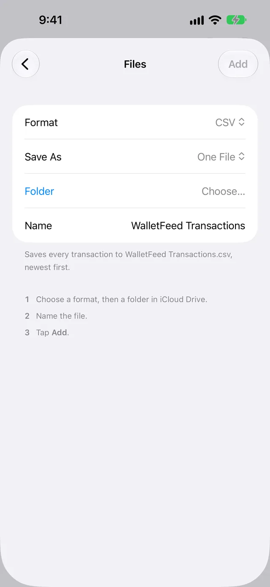

Open Apple Card transactions in Numbers
WalletFeed saves your Apple Card, Apple Cash and Savings transactions from your iPhone to a CSV file that you can open in Numbers. With WalletFeed Pro, WalletFeed updates the file when your transactions change.
Before you start
To do the steps on this page, you must have:
- An iPhone with iOS 26 or a newer version
- WalletFeed, with access to your Apple Card, Apple Cash or Savings account
- Numbers on your iPhone, or on a Mac that has access to your iCloud Drive
- WalletFeed Pro, for a file that WalletFeed updates.
WalletFeed is available only in the US.
WalletFeed Pro is a subscription with a 1-week free trial, or a one-time Lifetime purchase. Without WalletFeed Pro, you can make one CSV file, but WalletFeed does not update that file.
Step 1: Add a CSV file in WalletFeed
-
On your iPhone, open WalletFeed.
-
Tap Destinations.
-
Tap + at the top of the screen.

-
In the search field, type
Numbers.
-
Tap CSV File.
If you do not have WalletFeed Pro, the WalletFeed Pro screen opens. After you get WalletFeed Pro, the Files screen opens.
-
Make sure that Format is CSV.
-
Make sure that Save As is One File.

With One File, WalletFeed writes all your transactions to one file. The rows are in date sequence, and the row with the last date is at the top. You can also select One File per Month. Then each file has its month in the name, for example
WalletFeed 2026-10.csv. -
Tap Folder.
-
Select a folder in iCloud Drive.
Folder then shows the name of the folder.
-
To use a different file name, type it in Name.
At the end of the name, WalletFeed adds
.csv. For example, the file name isWalletFeed Transactions.csv. -
Tap Add at the top of the screen.
You can tap Add only after you select a folder.
-
When WalletFeed shows Save Transactions to Files?, tap Save.
The message tells you the data that WalletFeed saves in the file. It also gives the accounts and the start date of the transactions. If you tap Cancel, WalletFeed removes the new destination.
WalletFeed then writes your transactions to the file.
Step 2: Open the file in Numbers
- On your iPhone, open Numbers.
- Tap Browse.
- Open the folder that you selected in Step 1.
- Tap the file, for example
WalletFeed Transactions.csv.
Numbers shows each transaction as a row in the spreadsheet. If WalletFeed changes the file after you open it, Numbers shows the changes only after you open the file again.
Make one CSV file without WalletFeed Pro
Export CSV makes one CSV file with the transactions from a period that you select. You can use Export CSV without WalletFeed Pro. The file does not change after you save it.
-
On your iPhone, open WalletFeed.
-
Tap Settings (the gear button) at the top of the screen.
-
In the Data section, tap Export CSV.

-
Tap Range.
-
Select This Month, Last Month, Last 90 Days, This Year or All.

Transactions shows the number of transactions in the period.
-
Tap Export.
The iOS menu opens with the name of the file, for example
Apple Card Last Month.csv. -
Tap Save to Files.
-
Select a folder in iCloud Drive.
-
Tap Save.
-
Open Numbers.
-
Tap Browse.
-
Open the folder that you selected in step 8.
-
Tap the file.
Columns in the file
Each CSV file from WalletFeed has one row for each transaction. The file has these columns:
| Column | Data |
|---|---|
| Date | The date of the transaction, for example 2026-10-28. |
| Posted Date | The date that the charge posted. It is empty while the charge is pending. |
| Merchant | The merchant name. If Wallet has no merchant name, this column has the text from Description. |
| Description | The text of the transaction in Wallet. |
| Original Description | The text of the transaction on the card statement. |
| Amount | The value of the transaction, for example -23.40. It has a minus sign for purchases and fees, and no minus sign for payments and refunds. |
| Currency | The currency code, for example USD. |
| Direction | debit for purchases and fees, or credit for refunds, payments and deposits. |
| Status | The condition of the transaction in Wallet: authorized, pending, booked (posted) or memo. A file from Export CSV can also have rejected (a declined charge). |
| Type | The transaction type in Wallet, for example pointOfSale (a purchase), refund, billPayment (a payment) or transfer. |
| Category | The WalletFeed category, for example Groceries, Dining or Cash & Transfers. |
| MCC | The merchant category code from the card network. |
| Account | The Wallet account, for example Apple Card. |
| Foreign Amount | For a purchase in a different currency, the value in that currency. |
| Foreign Currency | The code of that different currency. |
| WalletFeed ID | The ID of the transaction. WalletFeed uses it to find and update each row. |
Changes to the file
While WalletFeed is open, WalletFeed Transactions.csv receives changes in seconds. When WalletFeed is not open, iOS starts WalletFeed approximately 1 hour or less after a change in Wallet. If Background Sync is on in Settings › Sync, WalletFeed then updates the file. If WalletFeed cannot open the folder at that time, it updates the file when you open WalletFeed, or when your iPhone is on a charger.
A pending charge is in the file with pending or authorized in Status. When the charge posts, WalletFeed updates that row. WalletFeed removes the rows of declined and expired charges, and the rows of transactions that Wallet removes. A refund is a different transaction. Its Amount has no minus sign.
Send previous transactions
A new CSV file also receives previous transactions from the start date in Settings › Sync › Initial History. Initial History is All until you change it. To add transactions from before that date, use Send History:
- In WalletFeed, tap Destinations.
- Tap WalletFeed Transactions, or the name that you typed.
- Tap Send History.
- Tap 30 Days, 90 Days, 1 Year or All.
Because WalletFeed finds each row by its WalletFeed ID, a transaction does not get a second row.
Change or remove the destination
- In WalletFeed, tap Destinations.
- Tap WalletFeed Transactions, or the name that you typed.
On the destination screen, you can do these tasks:
| Task | On the destination screen |
|---|---|
| Send only some transactions | Set Filter to on. Then set Include, Minimum, Include Pending, Accounts, Categories or Exclude. |
| Put the file in a different folder | Tap Change Folder. Then select the folder. |
| Stop the changes to the file | Set Enabled to off. |
| Remove the destination | Tap Delete. Then tap Delete again. |
After you select a different folder, WalletFeed writes your transactions from the start date to a file in that folder. If you delete the destination, the file and its transactions stay in the folder.
If there is a problem
If WalletFeed shows “Couldn't open this folder.”
WalletFeed cannot get access to the folder that you selected.
- Tap Folder (or Change Folder on the destination screen).
- Select a different folder in iCloud Drive.
If WalletFeed shows “Can't open the folder. Choose it again.”
WalletFeed does not have access to the folder of the destination.
- In WalletFeed, tap Destinations.
- Tap the destination.
- Tap Change Folder.
- Select the folder again.
If WalletFeed shows “The file has no WalletFeed ID column. Rename it to start a new one.”
Because the file in the folder has no WalletFeed ID column, WalletFeed cannot find the row for each transaction.
- On your iPhone, open the Files app.
- Open the folder of the destination.
- Touch and hold
WalletFeed Transactions.csv. - Tap Rename.
- Type a different name, for example
WalletFeed Transactions 1. - In WalletFeed, tap Destinations.
- Tap the destination.
- Tap Send History.
- Tap All.
WalletFeed makes a new WalletFeed Transactions.csv with all your transactions.
If the folder has no CSV file
WalletFeed writes the file only when there are transactions to put in the file.
-
In WalletFeed, tap Destinations.
-
Tap the destination.
-
Tap Send Test.
Then WalletFeed writes
WalletFeed Test.csvto the folder. This file has a sample transaction. If the folder hasWalletFeed Test.csv, WalletFeed can write to the folder. -
To write all your transactions to the file, tap Send History.
-
Tap All.
If new transactions are not in Numbers
WalletFeed did not update the file, or Numbers does not show the changes that WalletFeed made after you opened the file.
- On your iPhone, open WalletFeed.
- Tap Settings (the gear button) at the top of the screen.
- In the Sync section, tap Sync Now.
- In Numbers, open
WalletFeed Transactions.csvagain.
If text in a cell starts with an apostrophe
WalletFeed puts an apostrophe (') before text that starts with =, +, - or @. Because the apostrophe is before the text, spreadsheet apps do not use the text as a formula.
If you cannot tap Export
WalletFeed disables Export while it reads the transactions, or when the period has no transactions.
- Look at Transactions.
- If Transactions shows 0, select a different period in Range.
Related
Updated October 30, 2026